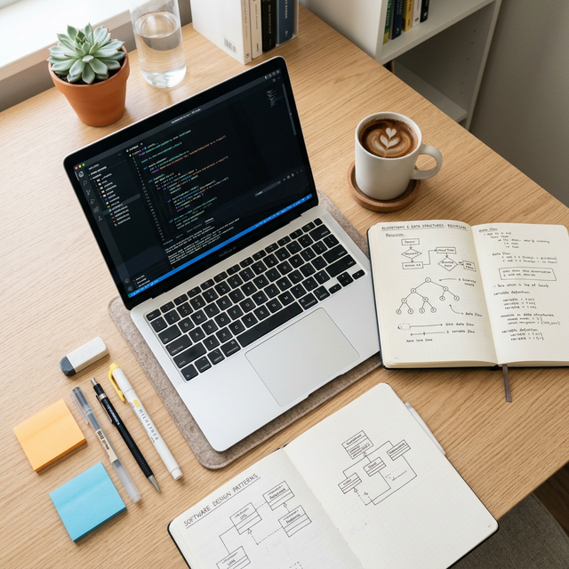

Akademik
Mata kuliah lengkap dari Semester 1 hingga Semester 8, dirancang sesuai standar industri global.
8
Semester
144
Total SKS
48
Mata Kuliah
4
Tahun Studi
| No | Kode MK | Mata Kuliah | SKS | Deskripsi |
|---|---|---|---|---|
| 1 | IF101 | Pengantar Informatika | 2 | Pengenalan konsep dasar ilmu informatika, sejarah komputer, dan peran informatika di era digital. |
| 2 | IF102 | Algoritma & Pemrograman | 4 | Konsep dasar algoritma, flowchart, pseudocode, dan pemrograman menggunakan bahasa Python untuk pemula. |
| 3 | MA101 | Kalkulus I | 3 | Limit, turunan, integral, dan aplikasinya dalam komputasi numerik dan grafika komputer. |
| 4 | MA102 | Matematika Diskrit | 3 | Logika proposional, himpunan, relasi, fungsi, teori graf, dan kombinatorika sebagai fondasi ilmu komputer. |
| 5 | IF103 | Sistem Digital | 3 | Sistem bilangan, gerbang logika, rangkaian kombinasional dan sekuensial, dan aritmetika biner. |
| 6 | UM101 | Bahasa Indonesia | 2 | Penguasaan bahasa Indonesia untuk penulisan karya tulis ilmiah dan laporan teknis. |
| Total SKS Semester 1 | 17 | |||
| No | Kode MK | Mata Kuliah | SKS | Deskripsi |
|---|---|---|---|---|
| 1 | IF201 | Pemrograman Berorientasi Objek | 4 | Konsep kelas, objek, enkapsulasi, pewarisan, dan polimorfisme menggunakan bahasa Java. |
| 2 | IF202 | Struktur Data | 4 | Array, linked list, stack, queue, tree, dan graph beserta implementasi dan analisis kompleksitasnya. |
| 3 | MA201 | Aljabar Linear | 3 | Vektor, matriks, transformasi linear, nilai eigen, dan aplikasinya pada grafika komputer dan machine learning. |
| 4 | IF203 | Arsitektur & Organisasi Komputer | 3 | Komponen CPU, memori, I/O, pipeline, dan arsitektur set instruksi (ISA). Pengantar assembly language. |
| 5 | IF204 | Basis Data | 3 | Model relasional, desain ER diagram, normalisasi, dan SQL dasar untuk pengelolaan data terstruktur. |
| 6 | UM201 | Bahasa Inggris Teknik | 2 | Membaca, memahami, dan menulis dokumentasi teknis dalam bahasa Inggris untuk keperluan profesional IT. |
| Total SKS Semester 2 | 19 | |||
| No | Kode MK | Mata Kuliah | SKS | Deskripsi |
|---|---|---|---|---|
| 1 | IF301 | Analisis & Desain Algoritma | 3 | Teknik desain algoritma: divide & conquer, greedy, dynamic programming, dan analisis kompleksitas. |
| 2 | IF302 | Pemrograman Web | 4 | HTML5, CSS3, JavaScript modern, HTTP protocol, dan pengembangan front-end web yang responsif dan interaktif. |
| 3 | IF303 | Jaringan Komputer | 3 | Model OSI/TCP-IP, protokol jaringan, konfigurasi router/switch, dan dasar-dasar keamanan jaringan. |
| 4 | IF304 | Sistem Operasi | 3 | Proses, thread, manajemen memori, sistem file, dan sinkronisasi. Praktikum dengan Linux/Unix. |
| 5 | MA301 | Probabilitas & Statistika | 3 | Teori probabilitas, distribusi data, pengujian hipotesis, dan analisis statistik untuk kebutuhan data science. |
| 6 | IF305 | Rekayasa Perangkat Lunak | 3 | Siklus pengembangan perangkat lunak (SDLC), analisis kebutuhan, desain UML, dan manajemen proyek Agile. |
| Total SKS Semester 3 | 19 | |||
| No | Kode MK | Mata Kuliah | SKS | Deskripsi |
|---|---|---|---|---|
| 1 | IF401 | Kecerdasan Buatan | 3 | Agen cerdas, pencarian heuristik, representasi pengetahuan, logika fuzzy, dan pengantar machine learning. |
| 2 | IF402 | Pengembangan Aplikasi Web | 4 | Framework back-end (Laravel/Node.js), REST API, autentikasi, dan integrasi database pada aplikasi web skala enterprise. |
| 3 | IF403 | Basis Data Lanjut | 3 | Optimasi query, indexing, stored procedures, transaksi, dan pengantar basis data NoSQL (MongoDB, Redis). |
| 4 | IF404 | Keamanan Informasi | 3 | Kriptografi, ancaman siber (OWASP Top 10), penetration testing dasar, dan kerangka keamanan informasi (ISO 27001). |
| 5 | IF405 | Interaksi Manusia & Komputer | 3 | Prinsip desain UI/UX, prototyping, usability testing, dan aksesibilitas dalam pengembangan antarmuka digital. |
| 6 | UM401 | Kewirausahaan Teknologi | 2 | Membangun startup teknologi, business model canvas, pitching, dan studi kasus perusahaan teknologi sukses. |
| Total SKS Semester 4 | 18 | |||
| No | Kode MK | Mata Kuliah | SKS | Deskripsi |
|---|---|---|---|---|
| 1 | IF501 | Machine Learning | 3 | Algoritma supervised & unsupervised learning, evaluasi model, fitur engineering, dan scikit-learn/TensorFlow. |
| 2 | IF502 | Pemrograman Mobile | 4 | Pengembangan aplikasi Android/iOS menggunakan Flutter/React Native, state management, dan integrasi API. |
| 3 | IF503 | Cloud Computing | 3 | Layanan IaaS, PaaS, SaaS, serta praktikum deployment aplikasi di AWS, Google Cloud, dan Microsoft Azure. |
| 4 | IF504 | Sistem Terdistribusi | 3 | Konsep CAP theorem, microservices, message queue, dan konsistensi data pada sistem terdistribusi modern. |
| 5 | IF505 | Data Analytics | 3 | Eksplorasi data, visualisasi (Tableau/PowerBI), analisis statistik lanjut, dan penyusunan dashboard untuk pengambilan keputusan. |
| 6 | IF506 | Etika Profesi TI | 2 | Etika digital, regulasi teknologi, hak privasi, kode etik programmer, dan tanggung jawab profesional IT. |
| Total SKS Semester 5 | 18 | |||
| No | Kode MK | Mata Kuliah | SKS | Deskripsi |
|---|---|---|---|---|
| 1 | IF601 | Deep Learning | 3 | Neural network, CNN, RNN, LSTM, dan Transformer. Implementasi model deep learning untuk pengolahan citra dan teks. |
| 2 | IF602 | DevOps & CI/CD | 3 | Praktik DevOps, containerisasi Docker, orkestrasi Kubernetes, CI/CD pipeline dengan GitHub Actions, dan monitoring. |
| 3 | IF603 | Pengolahan Bahasa Alami (NLP) | 3 | Text preprocessing, tokenisasi, word embedding, sentiment analysis, dan pengantar model bahasa besar (LLM). |
| 4 | IF604 | Internet of Things (IoT) | 3 | Arsitektur IoT, pemrograman mikrokontroler (Arduino/Raspberry Pi), protokol MQTT, dan analisis data sensor real-time. |
| 5 | IF605 | Pengujian Perangkat Lunak | 3 | Strategi pengujian, unit testing, integration testing, end-to-end testing, dan otomasi pengujian dengan Selenium/Cypress. |
| 6 | IF606 | Mata Kuliah Pilihan I | 3 | Pilihan dari daftar mata kuliah elektif sesuai konsentrasi (AI, Cybersecurity, atau Full-Stack Development). |
| Total SKS Semester 6 | 18 | |||
| No | Kode MK | Mata Kuliah | SKS | Deskripsi |
|---|---|---|---|---|
| 1 | IF701 | Kerja Praktik (KP) | 4 | Magang di perusahaan teknologi selama minimal 2 bulan, disertai laporan kerja praktik dan presentasi hasil magang. |
| 2 | IF702 | Metodologi Penelitian | 3 | Penyusunan proposal penelitian, tinjauan literatur, metode penelitian kuantitatif/kualitatif, dan penulisan karya ilmiah. |
| 3 | IF703 | Sistem Informasi Enterprise | 3 | Arsitektur ERP, integrasi sistem, Business Intelligence, dan implementasi SAP/Oracle di lingkungan perusahaan. |
| 4 | IF704 | Komputasi Awan Lanjut | 3 | Serverless architecture, infrastructure as code (Terraform), multi-cloud strategy, dan optimasi biaya cloud. |
| 5 | IF705 | Mata Kuliah Pilihan II | 3 | Pilihan lanjutan dari daftar mata kuliah elektif sesuai konsentrasi yang dipilih mahasiswa. |
| Total SKS Semester 7 | 16 | |||
| No | Kode MK | Mata Kuliah | SKS | Deskripsi |
|---|---|---|---|---|
| 1 | IF801 | Skripsi | 6 | Penelitian mandiri untuk menyelesaikan permasalahan di bidang informatika, dituangkan dalam karya tulis ilmiah dan dipresentasikan di hadapan dewan penguji. |
| 2 | IF802 | Seminar Hasil | 1 | Presentasi hasil penelitian skripsi di depan dosen penguji untuk mendapatkan masukan dan penilaian. |
| 3 | IF803 | Kolokium Informatika | 2 | Seminar dan diskusi riset terkini dari paper ilmiah internasional yang relevan dengan perkembangan teknologi masa depan. |
| 4 | IF804 | Mata Kuliah Pilihan III | 2 | Mata kuliah pilihan lanjutan untuk memperdalam konsentrasi atau memperluas wawasan di bidang terkait. |
| Total SKS Semester 8 | 11 | |||
Mahasiswa dari Semester 6 diwajibkan memilih satu dari tiga konsentrasi: Artificial Intelligence & Data Science, Cybersecurity & Network, atau Full-Stack & Mobile Development. Lihat halaman Modul AI, Modul Web, dan Modul Mobile untuk detail setiap konsentrasi.